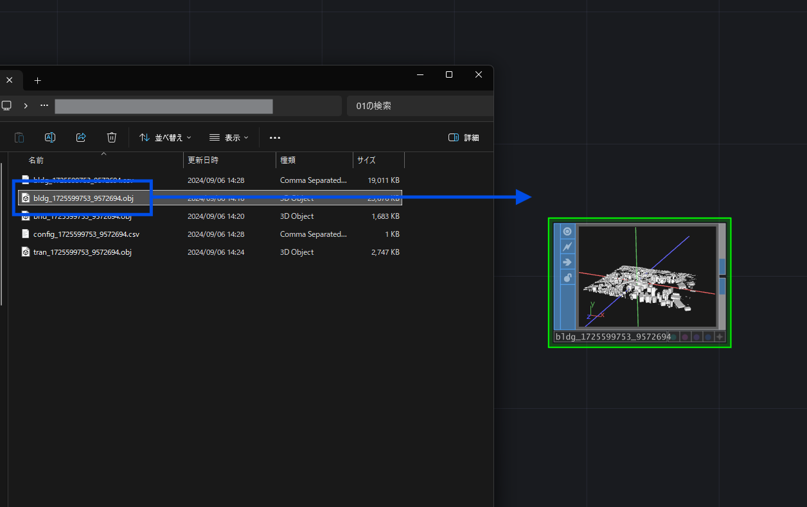
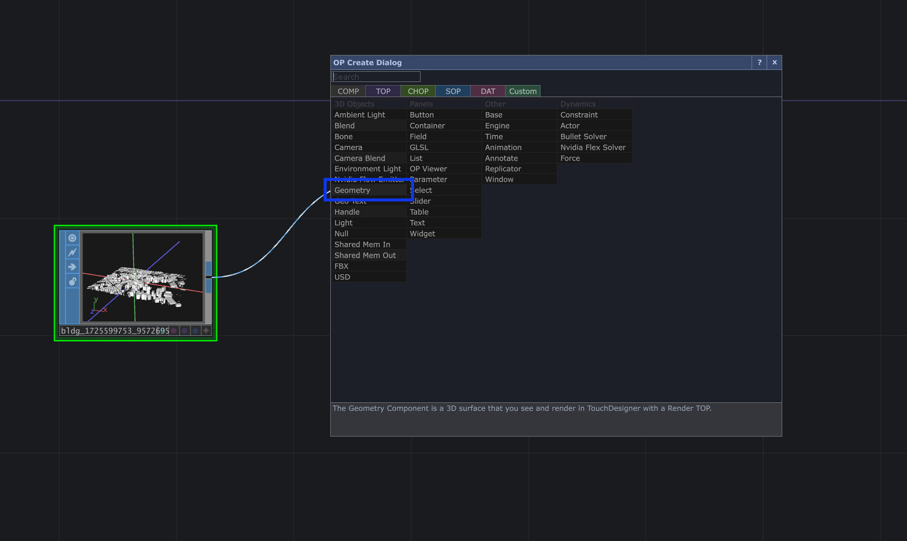
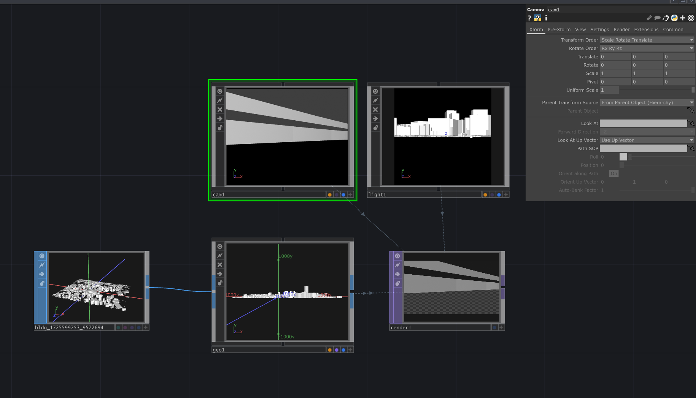
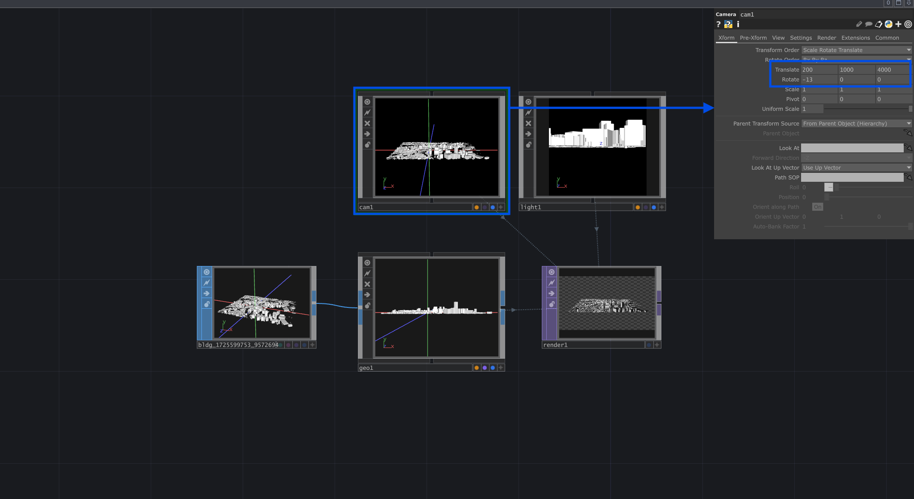
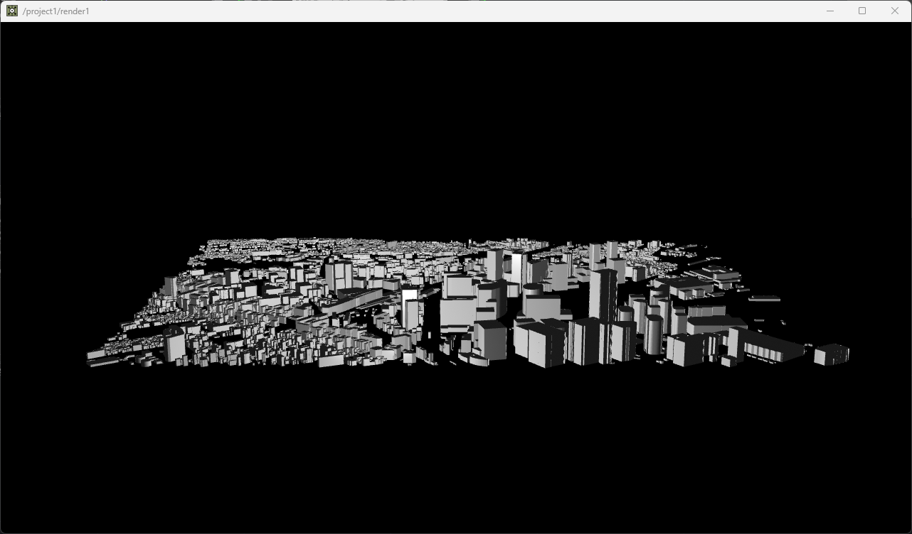

テクスチャ込みのデータを使うには
OBJデータの取り込み
書き出したOBJデータをTouchDesignerのネットワークエディターにドラッグすると、File in SOPとして読み込まれて利用することができます。

レンダリングを行うには
続いて、取り込んだOBJデータをTouchDesigner内でレンダリングする方法を説明します。
まず、取り込んだFile in SOPの右側のアウトレット（右端の線が伸びる部分）から線を伸ばしてTagキーを押して、Geometry COMPを配置します。

Geometry COMPが配置できたら、同様にTabキーからCamera COMPとLight COMP、Render TOPを設置します。

そのままだとカメラが全景を捉えていないので、カメラの数値を調整します。オブジェクトが中心にある場合はTranslateのZ位置を3000～5000程度に調整する事で全体が見えるようになります。

レンダリングした状態
以上のステップで書き出したOBJモデルの表示は完了です。
